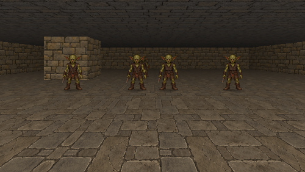
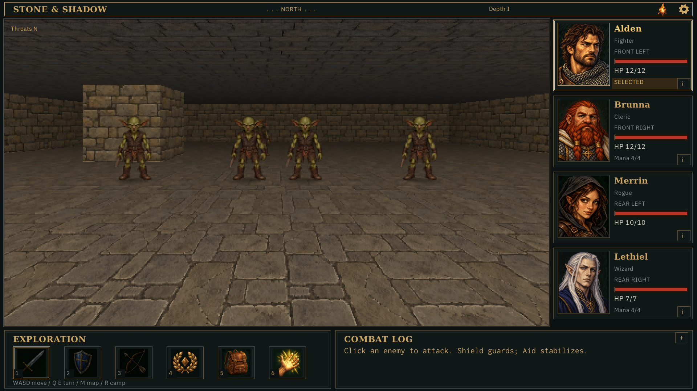
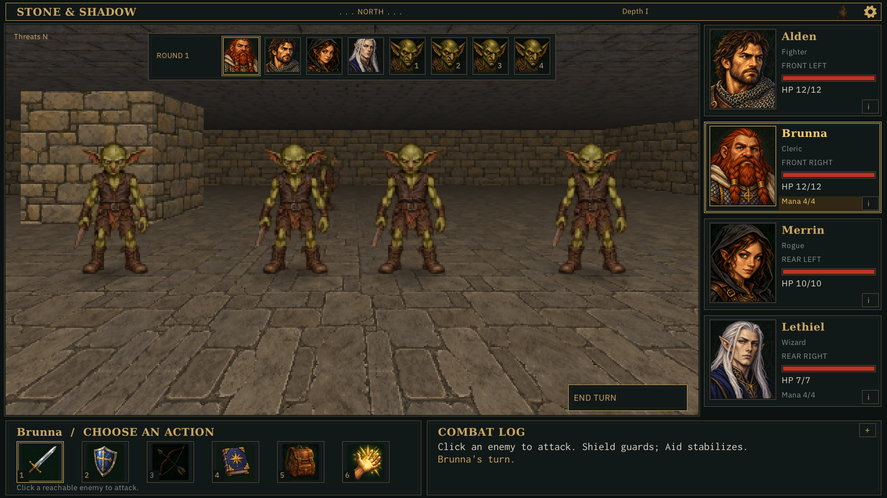
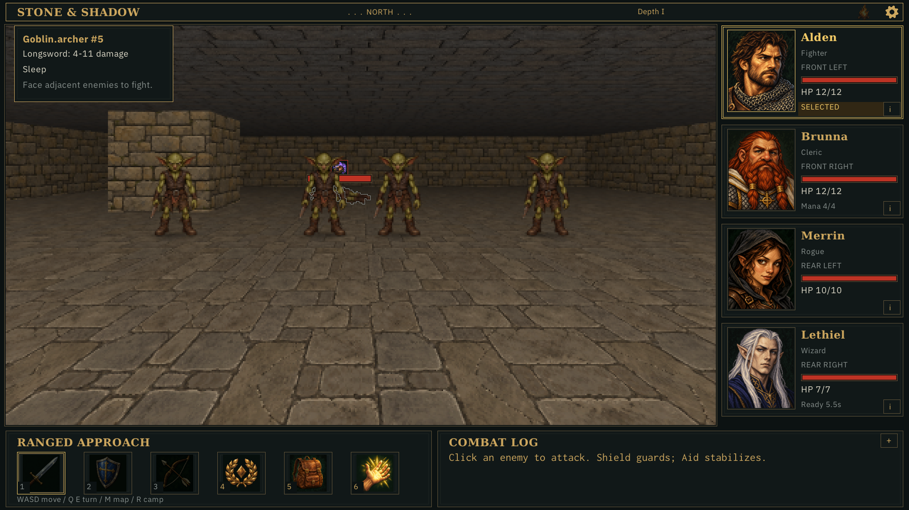
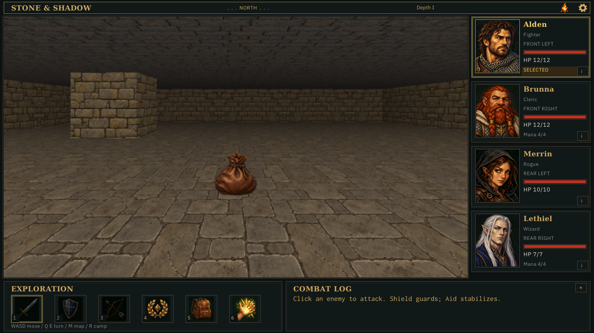
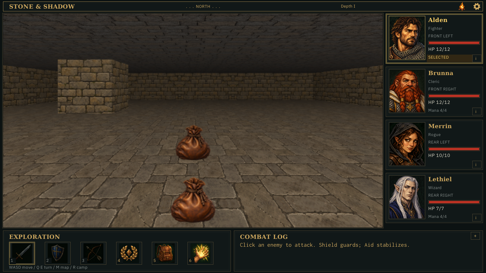
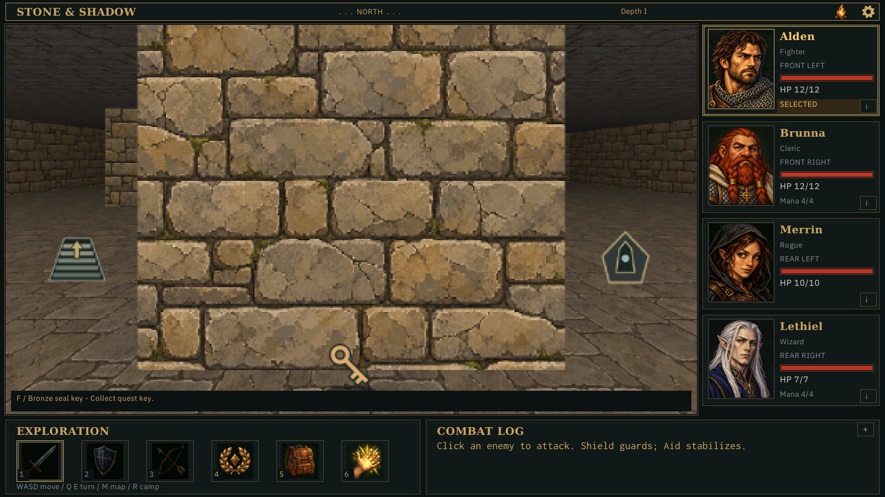
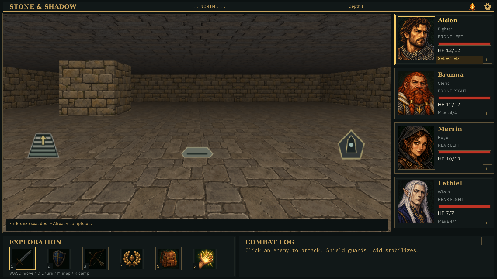
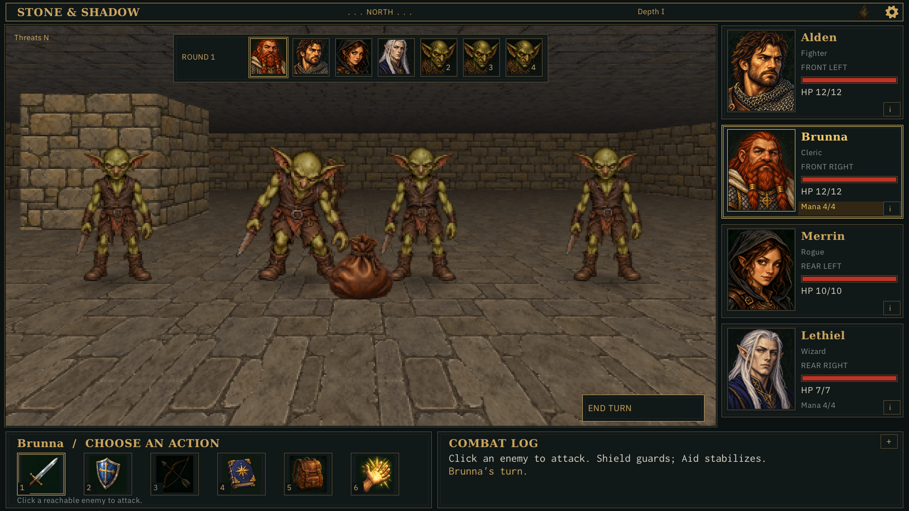

403 hidden captures match byte for byte between Debug and Release. This gallery retains selected HUD views and all 192 motion images. Normal gameplay remains on the legacy renderer. Verification · Controls and evidence
Both views resolve to 500×282 before nearest enlargement. Each loop contains 16 sampled poses and resets at the endpoint.
0 / 15







